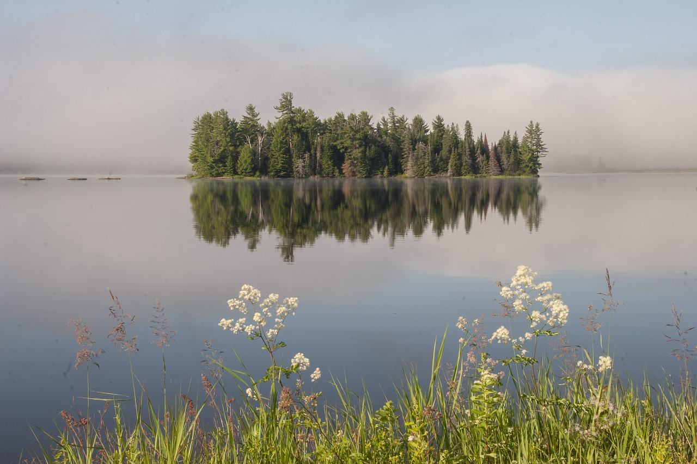
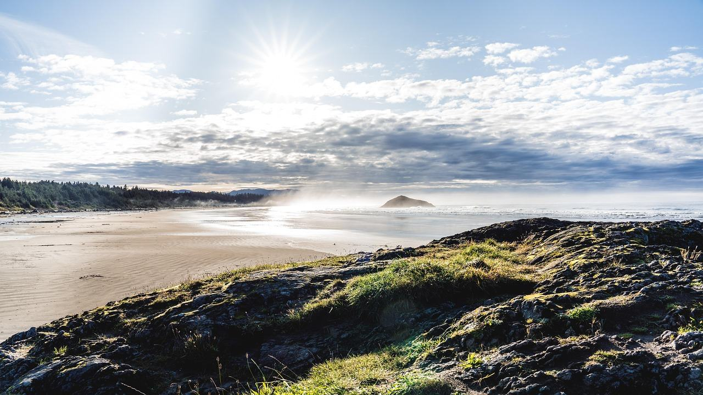

О нас
Мы из Петербурга и с 2014 года возим в Канаду группы до восьми человек.
Правила, от которых не отступаем
До 8 человек
Помещаемся в один минивэн, за один стол и на одну смотровую площадку без очереди.
Гид из региона
Гид живёт в своём регионе и знает парк в любой сезон.
Возим только в сезон
В апреле и мае групп нет: в горах тает снег, к озёрам не проехать.
На чём держится доверие
Договор
Туроператор в едином федеральном реестре, номер РТО 031672. Договор присылаем до оплаты.
Оплата частями
30% при записи, остальное за месяц до поездки. Чеки и акты — на каждую оплату.
Финансовая гарантия
Ответственность туроператора застрахована, реквизиты страховщика — в договоре.
Что говорят те, кто вернулся
«Шаттл на Морейн выкупили ещё в апреле. Мы приехали к озеру в половине седьмого, когда там было человек двадцать. К десяти стояла толпа.»
Ирина ПоляковаСкалистые горы · июль 2025
«Сияние поймали на третью ночь из пяти. Мне заранее сказали, что так бывает, поэтому в маршруте пять ночей, а не две.»
Дмитрий ШевцовЮкон · февраль 2026
«Виза заняла полгода, это самое тяжёлое. Зато сразу сказали: подавайтесь в январе, иначе не успеете. Успели. Медведей видели девять.»
Алексей ГринькоЧерчилл · ноябрь 2025
«Медведица с медвежонком ловили рыбу у берега, а мы смотрели с лодки и боялись дышать. Дождь шёл три дня из девяти, и это было даже красиво.»
Марина ЛебедеваТихий океан · сентябрь 2025
«Гид читал меню вслух и переводил. Сами мы бы заказали не то и не узнали, что в Квебеке ужинают поздно.»
Светлана ОрловаОсень Востока · октябрь 2025
«Думал, упряжки — аттракцион на полчаса. Оказалось, 20 километров по реке, и собаки слушаются только того, кто их кормит.»
Олег РуденкоЮкон · март 2026

Расскажем о маршруте по телефону
Оставьте номер: перезвоним, ответим на вопросы и пришлём программу с договором.